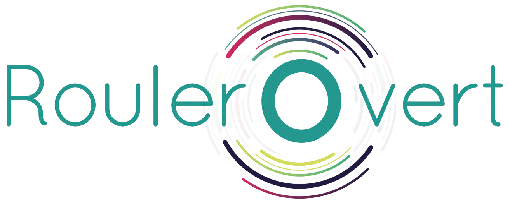

Visualisation de l'écosystème
Profil de liens SEO
Partenaires SEO
Site cible : https://rouler-o-vert.green
Profil de liens SEO
Partenaires SEO
Entité sélectionnée
Cliquez sur un nœud pour inspecter ses propriétés